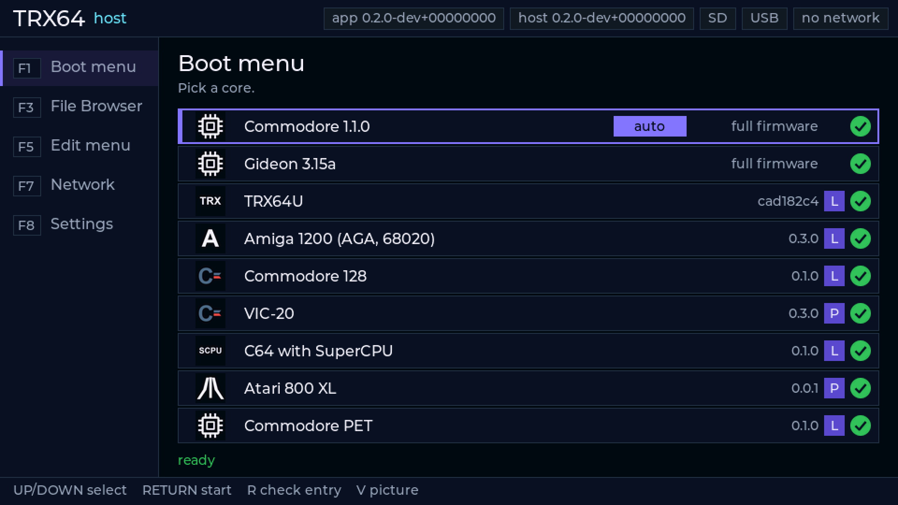
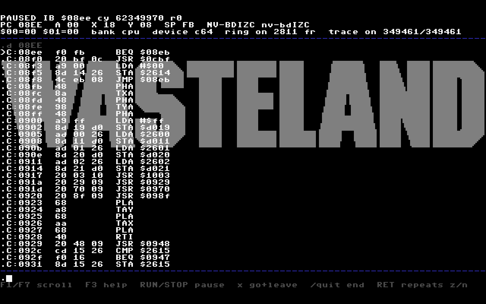
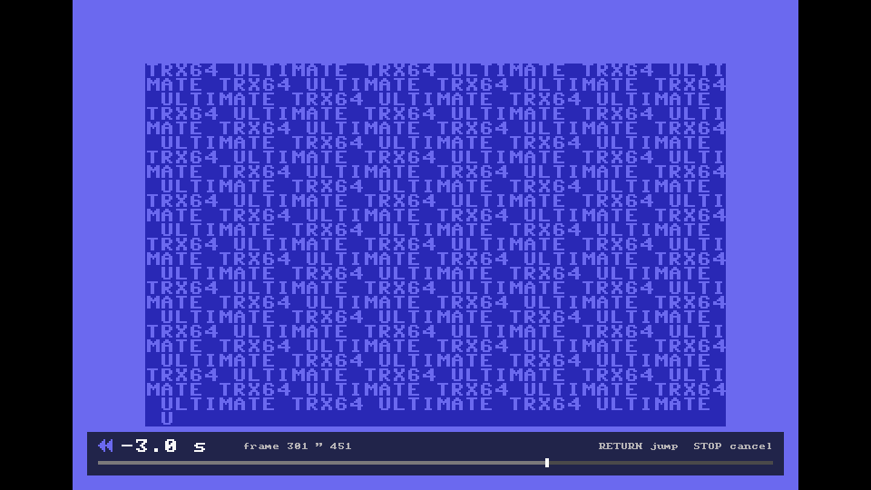
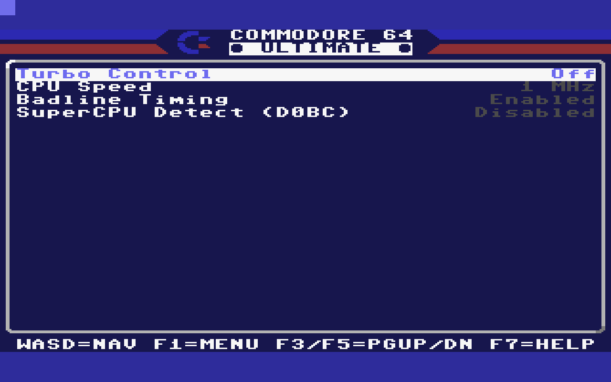
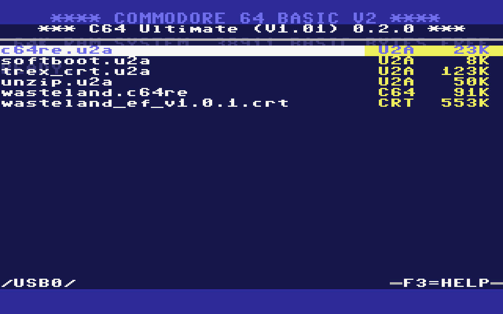
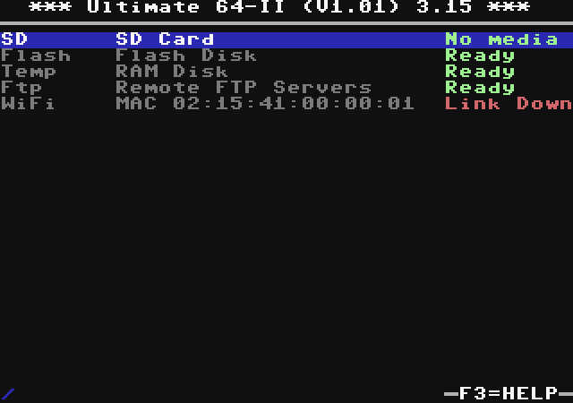

PARTIAL .COR / ICAP
Replace Layer 2
The host remains active. The machine starts cold in pb_l2.
Running hostVersioned contractPartial machine coreCommon core application
TRX64 Ultimate is the native C64 runtime. MultiCore loads it without reflashing the board.
MultiCore owns boot and board services. UE2 models the same Ultimate-specific target in software.
Development status
Public runtime
Its source and wiki are public. MultiCore remains private.
Platform boundary
Partial cores keep the installed host. Large cores carry a host copy. External firmware replaces MultiCore until power-off.
Cold startA core change resets the machine. The application loads ROMs, media, and settings before release.
ContractOnly partial cores use the versioned host/core contract.
The package type determines which FPGA layers remain active.
Layer 1 / installed in flash
PARTIAL .COR / ICAP
The host remains active. The machine starts cold in pb_l2.
LARGE .COR / IPROG
The package contains the machine and its host build.
FULL FIRMWARE .CFW / IPROG
The firmware runs its own bitstream and application. A power cycle restores the installed host.
Host, native C64 runtime, and software target.

Host and core platform
The installed host owns board services and loads partial cores, large cores, or external firmware.
.cor package format for partial and large coresPrivate developmentSource and interface documentation are not public.




Native C64 runtime
The native C64 runtime for C64 Ultimate and Ultimate 64 Elite II hardware.

Ultimate software target
UE2 runs unmodified Ultimate firmware on modeled board hardware. It is a software target for Made for Ultimate development.
Example cores / unsupported
The other cores test the loader or demonstrate the board. They are not TRX64 products.
COMMODORE
COMPUTERS
CONSOLES AND SYSTEMS
Not publicThe core matrix will ship with the first development release.